Webkit Binding原理
Table of Contents
1 简介
Webkit 1提供了网页解析，排版，渲染能力，使得用户能够看到一个完整的网页。 除此之外，Webkit还支持JavaScript的执行，对Webkit内部的DOM进行修改。但 我们知道Webkit本身并没有解析JS脚本的能力，所以就需要JS引擎对JS脚本进行 解析，然后调用适当的Webkit的接口来使用Webkit的能力（如上面说到的对 Webkit内部的DOM树进行修改）。 Webkit通过Webkit IDL来描述其对外的接口，任何JS引擎（不论JSC2还是V8）都需要按照这些描述来调用 Webkit接口来实现任意一条JS语句所想要的功能。 本文内容主要有:
- Binding代码的产生
- 一条JS函数调用语句如何调用到Webkit代码
2 编译时Binding代码的产生 :
我们下面按照时间顺序描述一下Webkit编译时如何生成了Binding代码的。
2.1 DerivedSources.make被make
Webkit被编译时，DerivedSources.make（MAC系统上）会被make，而它里面会通 过一个叫做generate_bindings.pl的脚本来将所有Webkit的idl文件（这就是上 面说到的Webkit对外的接口描述文件）都会被解析成IDLDocument（通过 IDLParser.pm这个脚本。IDLDocument包含了一个idl文件中所描述的所有方法和成员 变量等），然后CodeGeneratorJS.pm（JSC引擎是用这个脚本，V8 引擎则使用CodeGeneratorV8.pm）脚本又会利用这个IDLDocument生成相应的.h 文件和.cpp文件。
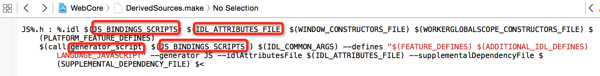
Figure 1: 每个idl脚本都被调用perl脚本产生了.h文件（脚本里实际上还会产生.cpp，后面会讲）
- generator_script
generator_script = $(PERL) $(addprefix -I $(WebCore)/, $(sort $(dir $(1)))) $(WebCore)/bindings/scripts/generate-bindings.pl
这个pl脚本是产生Binding代码的总入口，下面一小结会简单讲一下其代码逻辑。
- JS_BINDINGS_SCRIPTS
JS_BINDINGS_SCRIPTS = \
bindings/scripts/CodeGenerator.pm \
bindings/scripts/IDLParser.pm \
bindings/scripts/generate-bindings.pl \
bindings/scripts/preprocessor.pm \
bindings/scripts/CodeGeneratorJS.pm
这里就是用来创造Binding代码的所有的perl脚本了！非常伟大的脚本群。
- IDL_ATTRIBUTES_FILE
IDL_ATTRIBUTES_FILE = $(WebCore)/bindings/scripts/IDLAttributes.txt
这个文件里是所有的IDL 属性，这个文件将会被用来验证某个idl文件中的某个idl属性是否是一个未知 的idl属性，如果是则Webkit编译报异常。另外提一句：之前提到的Webkit IDL文档中描述了所有这些属性所对应的实际意义。简单来讲，这里面的每个 属性将来都会由CodeGeneratorJS.pm解释，并翻译成C++语句。关于C++语句翻 译后面会详细讲，这里先按下不表。
2.2 generate-bindings.pl
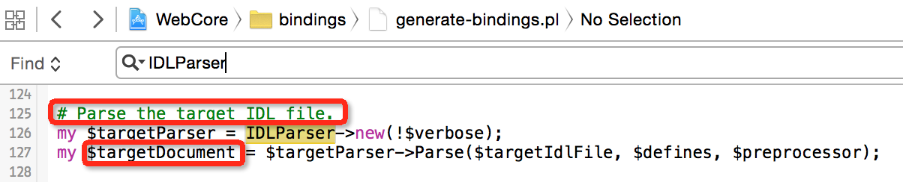 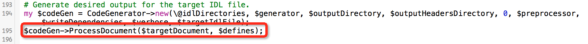 从上图可以看出，generate-bindings.pl首先利用IDLParser.pm对.idl接口描述 文件进行解析产生IDLDocument（有兴趣可以看一下IDLParser.Parse函数的实 现）；然后再调用CodeGenerator.ProcessDocument函数根据这个IDLDocument产 生Binding代码，看一下内部实现。
2.3 CodeGeneratorJS.pm
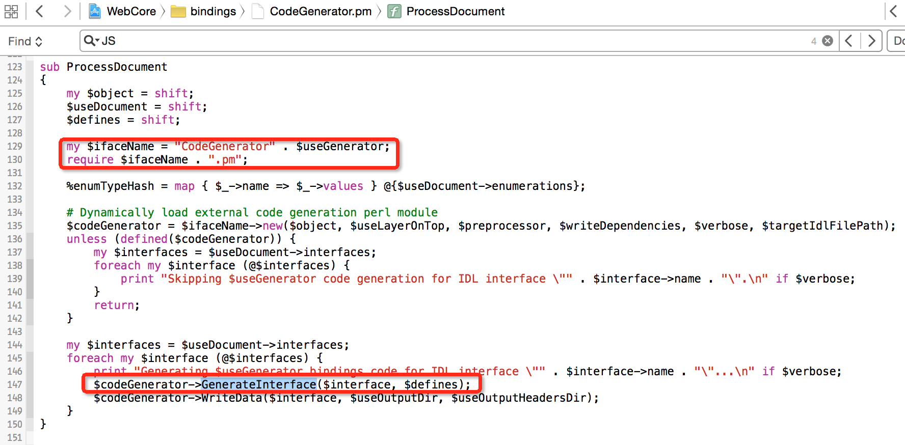 CodeGenerator.ProcessDocument()函数调用了 CodeGeneratorJS.generateInterface，而CodeGeneratorJS.generateInterface 调用了CodeGeneratorJS.generateHeader和CodeGenerateImplementation这两个 函数来分别产生某个idl文件对应的.h文件和.cpp文件。但由于这两个函数太过 于繁杂（实际上它里面大多是充斥着各种if-else来对不同的IDL属性进行特殊处 理，而且有一些很ugly的workaround），所以我们不详细展开它们。但是我们接 下来会以Document.idl里的getElementById()这个接口为例来看一下这个接口相 应的Binding代码怎么产生的，好让看官有一个直观的认识。另外，我们还有 必要看一下与Document类对应的Binding类JSDocument的创建函数是怎样的，因 为看官一定想知道JSDocument是怎样与Webkit中的Document产生关联，进而通过 proxy模式来调用Document里的getElementById函数的。
2.4 产生JSDocument初始化代码
先来看一下我们编译出来的JSDocument的创建的代码是什么样子： 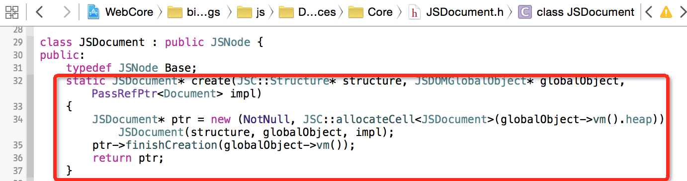 由于这个创建函数是在.h文件中，所以我们先去generateHeader函数去看一下里 面是怎么产生的这段代码： ./img/JSDocument-create.jpg 图中标出的显然就是产生那段代码的代码了。那 至于为什么那个"else"分支，需要结合Document.idl的interface的属性来看了： ./img/Document.idl-attrs.jpg 可见，这个接口的属性，只能走最后的"else"分 支了。
2.5 产生getElementById的Binding代码
还是先来看看getElementById这个idl接口最终产生出来的Binding代码是什么样子： 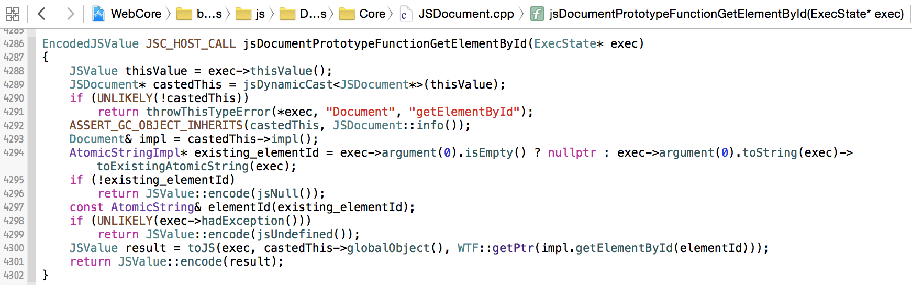 我们依次都能找到这段代码所产生的位置，分别如下： 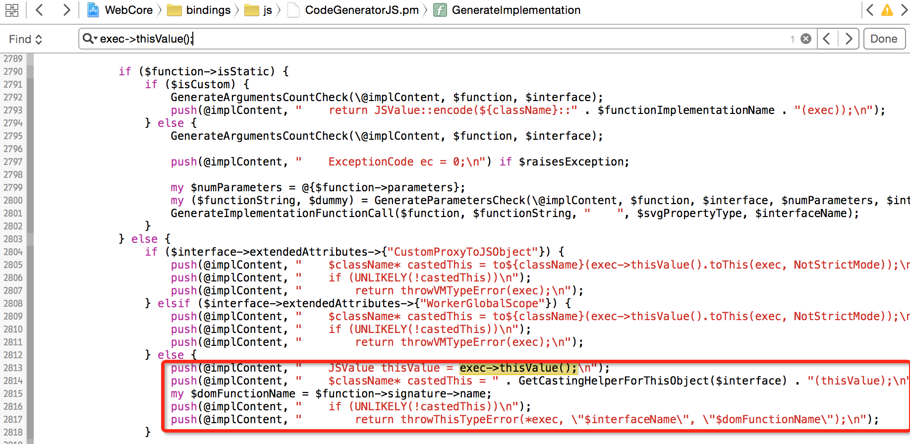 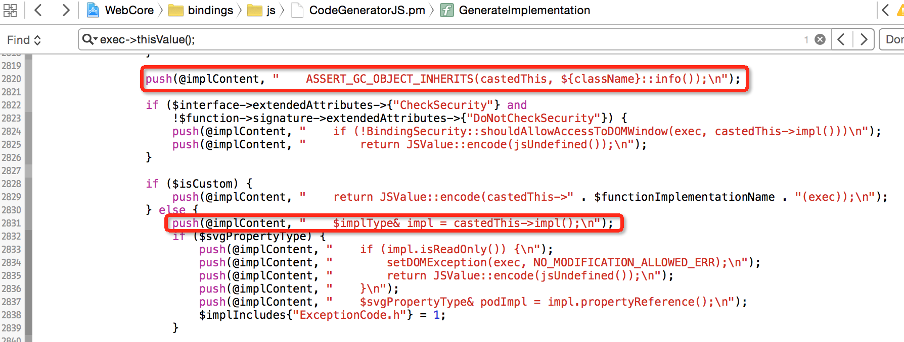 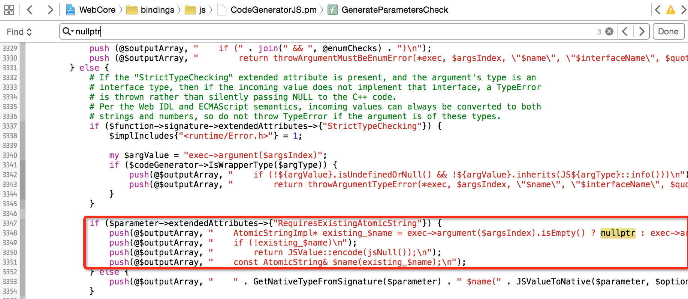 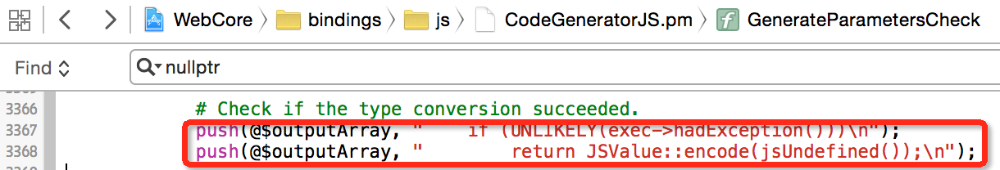 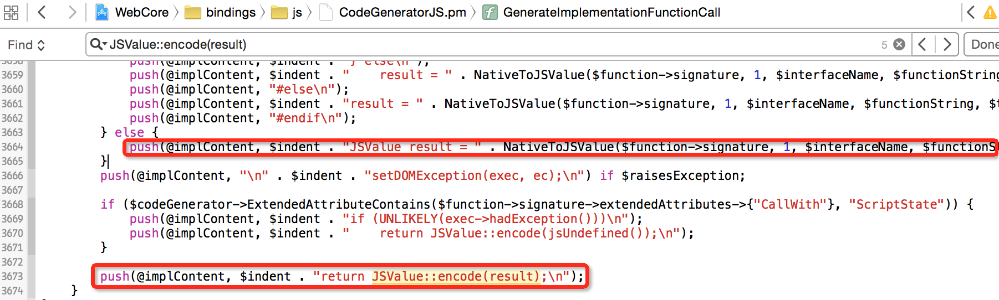 另外，可以注意到这段Binding代码中调用了Document.getElementById函数， 是一种代理模式（Proxy）。
2.6 Javascript函数调用到Binding代码的映射
现在知道了Binding代码怎么样调用到了Webkit代码，那么JS引擎又是如何把一 个Javascript语句（如document.getElementById("SOME_ID")）转化为对 Binding代码的调用呢？答案是，提供一个从字符串到函数指针的映射。 下图是JSDocument中所有函数的映射表，其中就有我们的例子 getElementById 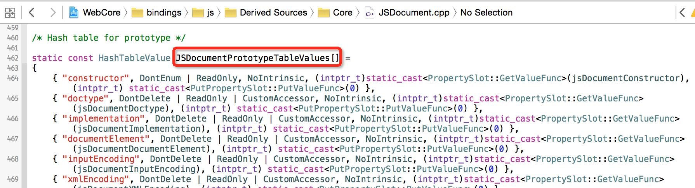 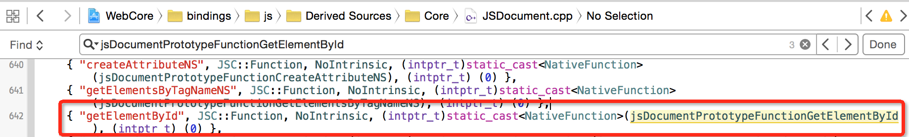 上面代码的产生可以 在CodeGeneratorJS.GenerateHashTable和 CodeGenerateJS.GenerateHashTableValueArray看到，这里就不展开了。 然后这个函数映射表被注册到了JS虚拟机中：
void JSDocumentPrototype::finishCreation(VM& vm)
{
Base::finishCreation(vm);
{*}reifyStaticProperties(vm, JSDocumentPrototypeTableValues, *this);{*}
}
3 运行时调用栈
上面重点讲述的是编译时Binding代码如何产生的，接下来我们看一下产生出来 的代码如何在运行时实现了从JavaScript语句到Webkit代码的执行的。 我们还以JSDocument的创建和getElementById为例， 写一个简单的html网页来测试：
<html>
<body>
<div id="theDiv">bla bla</div>
<script type="text/javascript">
var e = document.getElementById("theDiv");
</script>
</body>
</html>
看一下JSDocument何时被调用： 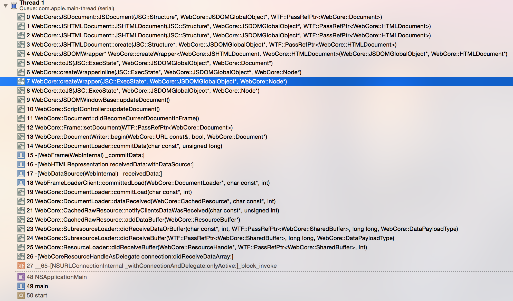
JSNode::JSNode(Structure* structure, JSDOMGlobalObject* globalObject, PassRefPtr<Node> impl)
: JSDOMWrapper(structure, globalObject)
, m_impl(impl.leakRef())
{
}
可见，JSNode在创建时是通过wrap相应的WebCore Node来产生直接关联的， JSNode代理了WebCore::Node来调用其内部的函数。
接下来具体看一下在执行getElementById时，函数执行栈： 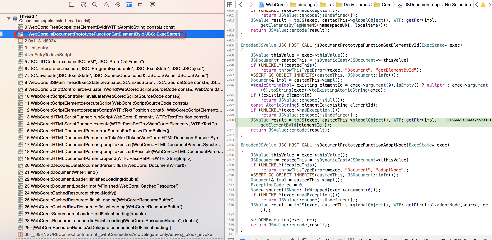 这个栈里没有函数字符串向函数指针的转换，是因为JIT优化了这部分代码。但 可以大致看到JS代码的evalute到getElementById()函数的调用经过。
4 总结
本文研究了Binding代码产生原理，以及产生的Binding代码是如何调用到Webkit 的接口的。但对后者的理解还不透彻，主要是还没研究一个JS引擎如何根据一个 Javascript变量对应到JS C++代码中的JSNode（或者primative变量）。另外， 如果要学习V8得Binding机制，可以参考：V8-Binding

{kind=link}
{kind=link}